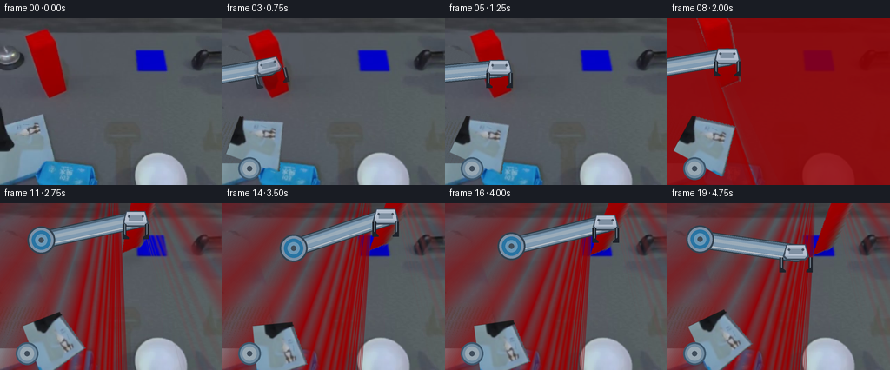
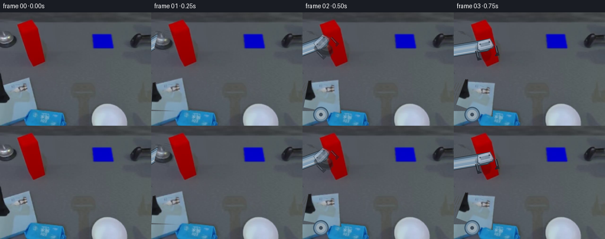

CODING AGENTS AS PIXEL WORLD MODELS
traex/GPT-6.1-Sol · common50_0045
点击播放 · 原生 RGB 像素
逐轮保存的候选
回放视频、检查图与代码变化。
每份候选均可单独播放。实际图片检查记录在下方工具轨迹中。
候选 01播放与检查图
点击播放 · 原生 RGB 像素


展开代码变化
--- 上一保存版本
+++ 本次保存版本
@@ -0,0 +1,244 @@
+from pathlib import Path
+import numpy as np
+from PIL import Image, ImageDraw, ImageFilter
+import cv2
+from scipy.ndimage import binary_dilation, gaussian_filter
+import artifact_io
+
+ROOT=Path(__file__).resolve().parent
+W,H=256,192
+S=3
+src=np.array(Image.open(ROOT/'first_frame.png').convert('RGB'))
+
+def maskpoly(p, soft=0):
+ im=Image.new('L',(W,H)); ImageDraw.Draw(im).polygon([tuple(q) for q in p],fill=255)
+ if soft: im=im.filter(ImageFilter.GaussianBlur(soft))
+ return np.array(im)/255.
+
+# Static table reconstruction uses pixels from the same scanline of the input.
+# Neither the static camera nor any of the environmental objects are changed.
+rng=np.random.default_rng(41)
+fill=np.empty_like(src)
+for y in range(H):
+ xs=np.arange(W)
+ ref=src[y,105+(xs*7+y*3)%30].astype(float)
+ fill[y]=np.clip(ref+np.array([-1,0,1]),0,255)
+# Preserve the faint illumination change along the rear edge of the table.
+for y in range(18):
+ fill[y]=src[y,75+(np.arange(W)*3)%50]
+
+arm_poly=[(-8,123),(49,108),(53,125),(64,164),(53,175),(20,184),(-8,171)]
+arm_mask=maskpoly(arm_poly)
+# Stop at the fixed blue base; the gray body is the moving shoulder/link housing.
+arm_mask[167:]=0
+shadow_mask=maskpoly([(-4,100),(3,106),(7,130),(17,144),(10,153),(-5,154)],.7)
+tool_mask=maskpoly([(-3,31),(9,33),(13,38),(22,38),(29,43),(30,51),(21,59),(4,62),(-3,58)],.6)
+rem=np.maximum(arm_mask,np.maximum(tool_mask,shadow_mask))
+rem=np.maximum(rem,maskpoly([(-2,119),(48,108),(54,117),(52,127),(8,132),(-3,131)],.8))
+rem=np.clip(gaussian_filter(rem,.45)*1.15,0,1)
+bg=np.clip(src*(1-rem[:,:,None])+fill*rem[:,:,None],0,255).astype(np.uint8)
+# Remove the movable box and its close contact shadow in a second plate.
+red_poly=[(27,21),(52,10),(58,15),(66,27),(78,80),(76,86),(59,94),(53,93)]
+red_m=maskpoly(red_poly)
+red_m=binary_dilation(red_m>.3,iterations=2).astype(float)
+red_m=np.clip(gaussian_filter(red_m,.7)*1.12,0,1)
+red_shadow=maskpoly([(63,28),(70,36),(84,70),(84,85),(74,94),(58,96),(63,78)],2)
+red_m=np.maximum(red_m,red_shadow*.85)
+clean=np.clip(bg*(1-red_m[:,:,None])+fill*red_m[:,:,None],0,255).astype(np.uint8)
+# Pixel sprites for the visible rigid housings.
+arm_rgba=np.dstack([src,(arm_mask*255).astype(np.uint8)])
+tool_rgba=np.dstack([src,(tool_mask*255).astype(np.uint8)])
+
+# Recover a pinhole projection from corresponding box corners. Its fixed
+# dimensions are 1 x 1 x 3, and all subsequent motion is rigid 3D translation.
+base=np.array([[57,91],[77,83],[72,73],[52,80]],float)
+top=np.array([[34,37],[64,27],[54,12],[29,22]],float)
+xy=np.array([[0,0],[1,0],[1,1],[0,1]],float)
+verts=np.r_[np.c_[xy,np.zeros(4)],np.c_[xy,np.ones(4)*3]]
+observed=np.r_[base,top]
+a=[]
+for p,(u,v) in zip(verts,observed):
+ q=np.r_[p,1]; a.extend([np.r_[q,np.zeros(4),-u*q],np.r_[np.zeros(4),q,-v*q]])
+_,_,vt=np.linalg.svd(a);P=vt[-1].reshape(3,4);P/=P[2,3]
+def proj(q):
+ q=np.asarray(q); v=np.c_[q,np.ones(len(q))]@P.T
+ return v[:,:2]/v[:,2,None]
+def ground_xy(u,v,z=0):
+ a=P[0,:2]-u*P[2,:2]; b=P[1,:2]-v*P[2,:2]
+ d=[u*(P[2,3]+P[2,2]*z)-(P[0,3]+P[0,2]*z),v*(P[2,3]+P[2,2]*z)-(P[1,3]+P[1,2]*z)]
+ return np.linalg.solve([a,b],d)
+delta=np.r_[ground_xy(174,51)-[.5,.5],0.]
+faces=[[3,0,4,7],[0,1,5,4],[1,2,6,5],[4,5,6,7]]
+# Face colors come directly from the first-frame face textures.
+face_layers=[]
+for face in faces:
+ face_layers.append(np.dstack([src,(maskpoly(observed[face])*255).astype(np.uint8)]))
+
+B=np.array([31.,173.]);E0=np.array([-85.,111.]);T0=np.array([4.,44.])
+L1=np.linalg.norm(E0-B);L2=np.linalg.norm(T0-E0)
+a0=np.arctan2(*(E0-B)[::-1]); f0=np.arctan2(*(T0-E0)[::-1])
+
+def ik(t):
+ v=t-B; d=np.linalg.norm(v);u=v/d
+ d=min(d,L1+L2-.05)
+ x=(L1**2-L2**2+d**2)/(2*d)
+ h=np.sqrt(max(0,L1**2-x**2))
+ e=B+x*u+h*np.array([u[1],-u[0]])
+ return e
+
+def transform(angle,origin,target):
+ c=np.cos(angle);s=np.sin(angle);R=np.array([[c,-s],[s,c]])
+ return np.c_[R,np.asarray(target)-R@origin]
+
+def warp_rgba(layer,m,scale=S):
+ M=m.copy();M[:,:]*=scale
+ return cv2.warpAffine(layer,M,(W*scale,H*scale),flags=cv2.INTER_LINEAR)
+
+def composite(im,rgba):
+ a=rgba[:,:,3:4].astype(float)/255
+ return np.clip(im*(1-a)+rgba[:,:,:3]*a,0,255)
+
+def raster_polygon(draw,p,color):
+ draw.polygon([tuple(np.array(q)*S) for q in p],fill=color)
+
+def capsule(draw,a,b,r,color):
+ a=np.asarray(a);b=np.asarray(b);v=b-a;v/=np.linalg.norm(v);n=np.array([-v[1],v[0]])
+ raster_polygon(draw,[a+n*r,b+n*r,b-n*r,a-n*r],color)
+ for c in [a,b]:draw.ellipse(tuple((np.r_[c-r,c+r]*S)),fill=color)
+
+def tube(draw,a,b,r):
+ # Concentric strips give a stable brushed-metal cylinder highlight.
+ v=b-a;v=v/np.linalg.norm(v);n=np.array([-v[1],v[0]])
+ capsule(draw,a,b,r+1.3,(47,59,69,255))
+ capsule(draw,a,b,r,(110,136,157,255))
+ raster_polygon(draw,[a+n*r*.57,b+n*r*.57,b-n*r*.67,a-n*r*.67],(127,154,177,255))
+ raster_polygon(draw,[a+n*r*.10,b+n*r*.10,b-n*r*.35,a-n*r*.35],(155,172,185,255))
+ raster_polygon(draw,[a+n*r*.62,b+n*r*.62,b+n*r*.79,a+n*r*.79],(181,190,199,255))
+ raster_polygon(draw,[a-n*r*.73,b-n*r*.73,b-n*r*.94,a-n*r*.94],(76,99,119,255))
+
+# Hidden continuation of the upper arm: only the part initially outside the
+# image is synthesized. It becomes visible through rigid shoulder rotation.
+ext=Image.new('RGBA',(W*S,H*S),(0,0,0,0))
+# use a larger source canvas for links outside the initial camera view
+EXT=200
+ext=Image.new('RGBA',((W+EXT)*S,H*S),(0,0,0,0));ed=ImageDraw.Draw(ext)
+# Rendering helper for extended source coordinates.
+def extension_layer():
+ im=Image.new('RGBA',((W+EXT)*S,H*S),(0,0,0,0));d=ImageDraw.Draw(im)
+ off=np.array([EXT,0]);tube(d,E0+off,B+off,23)
+ ar=np.array(im);ar[:,EXT*S:]=0
+ return ar
+ext_arr=extension_layer()
+
+def arm_render(t,tool_angle,jaw,frame):
+ e=ik(t);aa=np.arctan2(*(e-B)[::-1])-a0
+ # all body sprite pixels undergo a rotation, with no nonrigid changes
+ m=transform(aa,B,B)
+ me=m.copy();me[:,2]-=m[:,:2]@np.array([EXT,0])
+ extra=warp_rgba(ext_arr,me)
+ pic=Image.new('RGBA',(W*S,H*S),(0,0,0,0));d=ImageDraw.Draw(pic)
+ # The second link keeps its physical length throughout the motion.
+ tube(d,e,t-np.array([0.,0.]),9)
+ # Joint hardware, concentric rings and blue motor-end cover.
+ for radius,col in [(16,(51,66,80,255)),(14,(125,146,167,255)),(11,(40,116,163,255)),(7,(107,153,184,255)),(3,(65,78,90,255))]:
+ d.ellipse(tuple(np.r_[e-radius,e+radius]*S),fill=col)
+ layers=[extra,np.array(pic),warp_rgba(arm_rgba,m)]
+ # A fixed pivot cap covers the join to the unmoving base.
+ if frame>=2:
+ cap=Image.new('RGBA',(W*S,H*S),(0,0,0,0));cd=ImageDraw.Draw(cap)
+ for r,col in [(13,(60,86,107,255)),(11,(112,139,160,255)),(8,(151,167,178,255)),(3,(64,78,92,255))]:
+ cd.ellipse(tuple(np.r_[B-r,B+r]*S),fill=col)
+ layers.append(np.array(cap))
+ # Mechanically parallel fingers; only their separation changes.
+ hand=Image.new('RGBA',(W*S,H*S),(0,0,0,0));hd=ImageDraw.Draw(hand)
+ c=np.cos(tool_angle);s=np.sin(tool_angle)
+ u=np.array([c,s]);n=np.array([-s,c])
+ def q(x,y): return t+u*x+n*y
+ raster_polygon(hd,[q(-10,-11),q(4,-15),q(8,-11),q(8,11),q(4,15),q(-10,11)],(60,74,89,255))
+ raster_polygon(hd,[q(-9,-10),q(3,-13),q(6,-10),q(6,10),q(3,13),q(-9,10)],(147,163,180,255))
+ raster_polygon(hd,[q(-9,-10),q(-2,-12),q(3,-12),q(3,12),q(-2,12),q(-9,10)],(180,191,207,255))
+ raster_polygon(hd,[q(-5,-8),q(1,-8),q(1,8),q(-5,8)],(127,144,162,255))
+ for sg in [-1,1]:
+ j=sg*jaw
+ raster_polygon(hd,[q(5,j-sg*2.2),q(18,j-sg*2.2),q(20,j-sg*5),q(22,j-sg*5),q(22,j+sg*2),q(5,j+sg*2)],(29,34,42,255))
+ raster_polygon(hd,[q(5,j),q(16,j),q(17,j-sg*1),q(5,j-sg*1)],(104,119,132,255))
+ cc=q(-4,sg*8)
+ hd.ellipse(tuple(np.r_[cc-1.25,cc+1.25]*S),fill=(67,80,95,255))
+ hr=np.array(hand)
+ if frame<4:
+ orig=warp_rgba(tool_rgba,transform(tool_angle,T0,t))
+ blend=[0,.1,.45,.8][frame]
+ # Fade between two descriptions of the same rigid gripper housing.
+ # The silhouette and tool orientation remain the same scale.
+ layers.append((orig.astype(float)*(1-blend)).astype(np.uint8))
+ hr[:,:,3]=(hr[:,:,3]*blend).astype(np.uint8)
+ layers.append(hr)
+ return layers
+
+def smooth(t):
+ t=np.clip(t,0,1);return t*t*(3-2*t)
+
+def state(k):
+ if k<=5:return 0.,0.
+ if k==6:return 0.,.25
+ if k==7:return 0.,.60
+ if k<=13:
+ t=smooth((k-7)/6);return t,.60+.10*np.sin(np.pi*t)
+ return 1.,{14:.36,15:.12,16:.02,17:.02,18:.02,19:.02}[k]
+
+def render_box(canvas,tr,z):
+ shift=tr*delta+np.array([0.,0.,z]);dest=proj(verts+shift)
+ # Corner residual calibration keeps exact initial edges while preserving
+ # the fixed projective geometry of each rigid planar face.
+ residual=observed-proj(verts)
+ dest+=residual
+ ground=proj(verts[:4]+np.r_[tr*delta[:2],.01])
+ # Soft contact shadow has a fixed light direction and expands with height.
+ sh=Image.new('L',(W*S,H*S),0);sd=ImageDraw.Draw(sh)
+ shadow=ground+np.array([4+z*4,2+z*4]);sd.polygon([tuple(q*S) for q in shadow],fill=int(70/(1+z)))
+ sh=sh.filter(ImageFilter.GaussianBlur((1.3+z*2)*S))
+ alpha=np.array(sh)[:,:,None]/255.*.45
+ canvas=canvas*(1-alpha)
+ # Side faces precede the lid. Texture is warped by each face homography.
+ for face,rgba in zip(faces,face_layers):
+ a=observed[face].astype(np.float32);b=(dest[face]*S).astype(np.float32)
+ hom=cv2.getPerspectiveTransform(a,b)
+ out=cv2.warpPerspective(rgba,hom,(W*S,H*S),flags=cv2.INTER_LINEAR)
+ canvas=composite(canvas,out)
+ return canvas,dest
+
+def generate():
+ frames=[src.copy()]
+ origin_grip=proj(np.array([[.5,-.04,1.0]]))[0]
+ ready=origin_grip-np.array([0.,15.])
+ measures=[]
+ for k in range(1,20):
+ tr,z=state(k)
+ plate=bg if k<=5 else clean
+ canvas=np.array(Image.fromarray(plate).resize((W*S,H*S),Image.Resampling.BICUBIC)).astype(float)
+ if k>=6: canvas,boxpoints=render_box(canvas,tr,z)
+ else:boxpoints=observed
+ if k<=4:
+ t=smooth(k/4);wrist=T0+(ready-T0)*t;angle=np.pi/2*t;jaw=17.
+ elif k==5:
+ wrist=ready;angle=np.pi/2;jaw=13.2
+ else:
+ grip=proj(np.array([[.5,-.04,1.]])+tr*delta+np.array([0.,0.,z]))[0]
+ wrist=grip-np.array([0.,15.]);angle=np.pi/2;jaw=13.2
+ if k>=17:jaw=17.
+ if k>=18:
+ wrist+=np.array([-22.,21.]) if k==18 else np.array([-37.,34.])
+ e=ik(wrist)
+ measures.append([k,*wrist,*e,np.linalg.norm(e-B),np.linalg.norm(wrist-e),tr,z])
+ for layer in arm_render(wrist,angle,jaw,k):canvas=composite(canvas,layer)
+ frame=np.array(Image.fromarray(np.clip(canvas,0,255).astype(np.uint8)).resize((W,H),Image.Resampling.LANCZOS))
+ frames.append(frame)
+ frames=np.stack(frames).astype(np.uint8)
+ np.savetxt(ROOT/'.tmp'/'kinematics.csv',np.array(measures),delimiter=',',header='frame,wrist_x,wrist_y,elbow_x,elbow_y,L1,L2,translation,lift')
+ artifact_io.save(frames,ROOT)
+ # Save the reconstructed plates for optional numeric/local inspection.
+ Image.fromarray(bg).save(ROOT/'.tmp'/'arm_plate.png')
+ Image.fromarray(clean).save(ROOT/'.tmp'/'clean_plate.png')
+ return frames
+
+if __name__=='__main__':generate()
候选 02播放与检查图
点击播放 · 原生 RGB 像素

展开代码变化
--- 上一保存版本
+++ 本次保存版本
@@ -200,10 +200,16 @@
alpha=np.array(sh)[:,:,None]/255.*.45
canvas=canvas*(1-alpha)
# Side faces precede the lid. Texture is warped by each face homography.
- for face,rgba in zip(faces,face_layers):
+ for fi,(face,rgba) in enumerate(zip(faces,face_layers)):
a=observed[face].astype(np.float32);b=(dest[face]*S).astype(np.float32)
hom=cv2.getPerspectiveTransform(a,b)
out=cv2.warpPerspective(rgba,hom,(W*S,H*S),flags=cv2.INTER_LINEAR)
+ clip=Image.new('L',(W*S,H*S));ImageDraw.Draw(clip).polygon([tuple(q) for q in b],fill=255)
+ cm=np.array(clip).astype(float)/255
+ out[:,:,3]=(out[:,:,3]*cm).astype(np.uint8)
+ if fi==0:
+ out[:,:,:3]=[146,1,2]
+ out[:,:,3]=np.array(clip)
canvas=composite(canvas,out)
return canvas,dest
候选 03播放与检查图
候选 04播放与检查图
点击播放 · 原生 RGB 像素

展开代码变化
--- 上一保存版本
+++ 本次保存版本
@@ -43,7 +43,7 @@
red_m=binary_dilation(red_m>.3,iterations=2).astype(float)
red_m=np.clip(gaussian_filter(red_m,.7)*1.12,0,1)
red_shadow=maskpoly([(63,28),(70,36),(84,70),(84,85),(74,94),(58,96),(63,78)],2)
-red_m=np.maximum(red_m,red_shadow*.85)
+red_m=np.maximum(red_m,red_shadow)
clean=np.clip(bg*(1-red_m[:,:,None])+fill*red_m[:,:,None],0,255).astype(np.uint8)
# Pixel sprites for the visible rigid housings.
arm_rgba=np.dstack([src,(arm_mask*255).astype(np.uint8)])
@@ -138,7 +138,7 @@
extra=warp_rgba(ext_arr,me)
pic=Image.new('RGBA',(W*S,H*S),(0,0,0,0));d=ImageDraw.Draw(pic)
# The second link keeps its physical length throughout the motion.
- tube(d,e,t-np.array([0.,0.]),9)
+ tube(d,e,t,7.5)
# Joint hardware, concentric rings and blue motor-end cover.
for radius,col in [(16,(51,66,80,255)),(14,(125,146,167,255)),(11,(40,116,163,255)),(7,(107,153,184,255)),(3,(65,78,90,255))]:
d.ellipse(tuple(np.r_[e-radius,e+radius]*S),fill=col)
@@ -216,7 +216,7 @@
def generate():
frames=[src.copy()]
origin_grip=proj(np.array([[.5,-.04,1.0]]))[0]
- ready=origin_grip-np.array([0.,15.])
+ ready=origin_grip-np.array([0.,20.])
measures=[]
for k in range(1,20):
tr,z=state(k)
@@ -227,10 +227,10 @@
if k<=4:
t=smooth(k/4);wrist=T0+(ready-T0)*t;angle=np.pi/2*t;jaw=17.
elif k==5:
- wrist=ready;angle=np.pi/2;jaw=13.2
+ wrist=ready;angle=np.pi/2;jaw=13.8
else:
grip=proj(np.array([[.5,-.04,1.]])+tr*delta+np.array([0.,0.,z]))[0]
- wrist=grip-np.array([0.,15.]);angle=np.pi/2;jaw=13.2
+ wrist=grip-np.array([0.,20.]);angle=np.pi/2;jaw=13.8
if k>=17:jaw=17.
if k>=18:
wrist+=np.array([-22.,21.]) if k==18 else np.array([-37.,34.])
候选 05播放与检查图
可观测工具轨迹
实际执行的命令与返回图片。
命令 1exit 0
/bin/bash -lc 'ls -la && cat prompt.txt && cat GENERATION_RULES.md'
命令 2exit 0
/bin/bash -lc "cat task_spec.json && cat artifact_io.py && python - <<'PY'
from PIL import Image
import numpy as np
im=np.array(Image.open('first_frame.png'))
print('shape',im.shape)
c,n=np.unique(im.reshape(-1,3),axis=0,return_counts=True)
for i in np.argsort(n)[-40:][::-1]:print(c[i], n[i])
# nearest plain palette every 4 pixel
palette=np.array([[20,22,25],[70,74,81],[120,122,124],[170,173,175],[220,221,223],[255,255,255],[200,40,40],[70,120,190],[151,122,86],[194,167,129]])
sym=' .:-=WRBTt'
for y in range(0,192,4):
row=''
for x in range(0,256,4):
c=im[y:y+4,x:x+4].mean((0,1)); d=((palette-c)**2).sum(1); row+=sym[np.argmin(d)]
print(row)
PY"命令 3exit 0
/bin/bash -lc "python - <<'PY'
import numpy as np
from PIL import Image
from scipy.ndimage import label,find_objects
im=np.array(Image.open('first_frame.png')).astype(float); r,g,b=im.transpose(2,0,1)
for name,m in [('red',(r>80)&(r>g*1.6)&(r>b*1.6)),('blue',(b>70)&(b>r*1.3)&(b>g*1.15)),('bright',im.mean(2)>130),('dark',im.mean(2)<45)]:
l,n=label(m);print(name)
for sl in find_objects(l):
if sl and m[sl].sum()>10:
a=m[sl];print(sl, a.sum(),'range',np.min(im[sl][a],0),np.max(im[sl][a],0))
# semantic ASCII: background gray=' '; neutral brighter 110+ by shades; red R; blue B; darkness black chars
for y in range(0,192,2):
row=''
for x in range(0,256,2):
R,G,B=im[y:y+2,x:x+2].mean((0,1));v=(R+G+B)/3
if R>70 and R>G*1.5 and R>B*1.5:s='R'
elif B>60 and B>R*1.3 and B>G*1.1:s='B'
elif v<25:s='#'
elif v<50:s='x'
elif v<70:s='.'
elif v<102:s=' '
elif v<125:s='-'
elif v<160:s='+'
elif v<195:s='o'
else:s='W'
row+=s
print('%03d'%y+row)
PY"命令 4exit 0
/bin/bash -lc "python - <<'PY'
from PIL import Image
import numpy as np
from scipy.ndimage import sobel
im=np.array(Image.open('first_frame.png'));print(Image.open('first_frame.png').info)
for y in [0,10,20,30,35,40,50,60,70,80,90,100,110,120,130,140,150,160,170,180,190]:
print('y=',y,' '.join(f'{x}:{tuple(im[y,x])}' for x in range(0,256,10)))
# Color-specific rectangle runs for red rows
r,g,b=im.transpose(2,0,1).astype(int)
for y in range(10,94,3):
xx=np.where((r[y]>g[y]*1.6)&(r[y]>b[y]*1.6)&(r[y]>80))[0]
if len(xx):
l,h=xx[0],xx[-1];print(y,l,h,[(x,im[y,x].tolist()) for x in np.linspace(l,h,7).astype(int)])
PY"命令 5exit 0
/bin/bash -lc "python - <<'PY'
from PIL import Image
import numpy as np
from scipy.ndimage import sobel
im=np.array(Image.open('first_frame.png')).astype(float)
r,g,b=im.transpose(2,0,1)
# Plot red in shades; edges
for y in range(9,95):
row=''
for x in range(24,86):
R,G,B=im[y,x]
if G<10 and B<10:s='0123456789'[int(np.clip((R-130)/6,0,9))]
elif R>G*1.5 and R>B*1.5:s=':'
elif np.max(abs(im[y,x]-[83,88,96]))>15:s='.'
else:s=' '
row+=s
print(f'{y:02d} '+row)
print('EDGE BOTTOM OBJECTS')
gr=im.mean(2);dx=sobel(gr,1);dy=sobel(gr,0);edge=np.sqrt(dx**2+dy**2)
for y in range(104,192,2):
row=''
for x in range(0,256,2):
e=edge[y:y+2,x:x+2].max()
row+='@' if e>200 else '+' if e>100 else '.' if e>50 else ' '
print(f'{y:03d} '+row)
PY"命令 6exit 0
/bin/bash -lc "python - <<'PY'
import numpy as np
from PIL import Image
im=np.array(Image.open('first_frame.png'))
# bottom left full color indexed quantization to representative actual palette
pal=np.array([[24,28,35],[50,60,71],[80,87,95],[104,126,145],[126,148,160],[124,157,183],[156,174,192],[37,131,184],[25,86,143],[183,198,217],[230,233,235]])
chars='#x .:*=BbOW'
for box in [(0,100,114,192),(150,145,220,192),(0,30,30,66)]:
x0,y0,x1,y1=box;print('BOX',box)
for y in range(y0,y1):
row=''
for x in range(x0,x1):row+=chars[((im[y,x]-pal)**2).sum(1).argmin()]
print(f'{y:03d} '+row)
PY"命令 7exit 0
/bin/bash -lc "python - <<'PY'
import numpy as np
from PIL import Image
im=np.array(Image.open('first_frame.png'))
# scan object edge strongest gradient from gray to object as row y bottom left
for y in range(100,193,4):
if y==192:break
# red end min color and right around 80
print(y, [im[y,x].tolist() for x in [0,5,10,15,20,25,30,35,40,45,50,55,60,65,70,75,80]])
PY"命令 8exit 0
/bin/bash -lc "python - <<'PY'
import numpy as np
A=np.array([29.,22]);B=np.array([57.,91]);C=np.array([62.,27]);D=np.array([77.,82]);M=np.array([B-A,-(D-C)]).T;t=np.linalg.solve(M,C-A);print('vertical VP',A+t[0]*(B-A))
PY"命令 9exit 0
/bin/bash -lc "python - <<'PY' import numpy as np B=np.array([77.,185]); E0=np.array([-54.,107]); W0=np.array([4.,44.]);l1=np.linalg.norm(E0-B);l2=np.linalg.norm(W0-E0) for W in [W0,[20,44],[40,43],[55,43],[174,21],[183,12],[185,32]]: W=np.array(W);d=np.linalg.norm(W-B);u=(W-B)/d;a=(l1*l1-l2*l2+d*d)/(2*d);h=np.sqrt(max(0,l1*l1-a*a));e=B+a*u+h*np.array([u[1],-u[0]]) print(W,e,'rot',np.rad2deg(np.arctan2(*(e-B)[::-1])-np.arctan2(*(E0-B)[::-1]))) PY"
命令 10exit 0
/bin/bash -lc "python - <<'PY'
from PIL import Image
import numpy as np
from scipy.spatial import ConvexHull
im=np.array(Image.open('first_frame.png')).astype(int);r,g,b=im.transpose(2,0,1);m=(r>g*1.7)&(r>b*1.7)&(r>110);y,x=np.where(m);xy=np.c_[x,y];h=ConvexHull(xy);print(xy[h.vertices]);
# row interior color avg
for y in range(12,94):
x=np.where(m[y])[0]
if len(x)>5:print(y,x.min(),x.max(),np.median(r[y,x]),np.percentile(r[y,x],90))
PY"命令 11exit 0
/bin/bash -lc "python - <<'PY' import numpy as np pairs=[([34,37],[57,91],[64,27],[76,83]),([29,22],[57,91],[64,27],[76,83])] for a,b,c,d in pairs: a,b,c,d=map(np.array,[a,b,c,d]);v=np.linalg.solve(np.stack([b-a,c-d],1),c-a);print(a+(b-a)*v[0],v) PY"
命令 12exit 0
/bin/bash -lc "python - <<'PY' import numpy as np B=np.array([35.,158]);E0=np.array([-82.,117]);W0=np.array([4.,44]);L1=np.linalg.norm(B-E0);L2=np.linalg.norm(W0-E0) for w in [W0,[46,50],[54,40],[80,20],[120,10],[175,24],[182,20],[185,32]]: W=np.array(w);v=W-B;d=np.linalg.norm(v);u=v/d;a=(L1*L1-L2*L2+d*d)/(2*d);h=np.sqrt(max(0,L1*L1-a*a));e=B+a*u+h*np.array([u[1],-u[0]]);print(w,e) PY"
命令 13exit 0
/bin/bash -lc "python - <<'PY' import importlib.util for m in ['cv2','scipy','PIL']:print(m,bool(importlib.util.find_spec(m))) PY"
命令 14exit 0
/bin/bash -lc "python - <<'PY'
import numpy as np
from PIL import Image
from scipy.spatial import ConvexHull
im=np.array(Image.open('first_frame.png')).astype(int);r,g,b=im.transpose(2,0,1);m=(b>120)&(r<50)&(g<50);m[80:]=False;y,x=np.where(m);xy=np.c_[x,y];print(xy[ConvexHull(xy).vertices])
for y in range(34,65):
x=np.where(m[y])[0]
if len(x):print(y,x.min(),x.max())
PY"命令 15exit 0
/bin/bash -lc "cat > .tmp/cam.py <<'PY'
import numpy as np
# order D C B A
base=np.array([[57,91],[77,83],[72,73],[52,80]],float)
top=np.array([[34,37],[64,27],[54,12],[29,22]],float)
xy=np.array([[0,0],[1,0],[1,1],[0,1]],float)
world=np.r_[np.c_[xy,np.zeros(4)],np.c_[xy,np.ones(4)*3]]
image=np.r_[base,top]
A=[]
for w,(u,v) in zip(world,image):
p=np.r_[w,1];A.append(np.r_[p,np.zeros(4),-u*p]);A.append(np.r_[np.zeros(4),p,-v*p])
_,_,vt=np.linalg.svd(A);P=vt[-1].reshape(3,4);P/=P[2,3]
print(P)
def project(w):
q=np.c_[w,np.ones(len(w))]@P.T;return q[:,:2]/q[:,2,None]
print('projection',project(world))
# base center at174,50
def xyfor(u,v,z):
a=P[0,:2]-u*P[2,:2];b=P[1,:2]-v*P[2,:2];d=np.array([u*(P[2,3]+P[2,2]*z)-(P[0,3]+P[0,2]*z),v*(P[2,3]+P[2,2]*z)-(P[1,3]+P[1,2]*z)])
return np.linalg.solve([a,b],d)
c=xyfor(174,51,0);d=c-.5
print('translation',d)
print('destination',project(world+np.r_[d,0]))
for z in [1,1.3,1.5]:print('grasp orig',project(np.array([[.5,-.04,z]])),'dest',project(np.array([[.5,-.04,z]])+np.r_[d,0]))
PY
python .tmp/cam.py"命令 16exit 0
/bin/bash -lc "cat > generate.py <<'PY'
from pathlib import Path
import numpy as np
from PIL import Image, ImageDraw, ImageFilter
import cv2
from scipy.ndimage import binary_dilation, gaussian_filter
import artifact_io
ROOT=Path(__file__).resolve().parent
W,H=256,192
S=3
src=np.array(Image.open(ROOT/'first_frame.png').convert('RGB'))
def maskpoly(p, soft=0):
im=Image.new('L',(W,H)); ImageDraw.Draw(im).polygon([tuple(q) for q in p],fill=255)
if soft: im=im.filter(ImageFilter.GaussianBlur(soft))
return np.array(im)/255.
# Static table reconstruction uses pixels from the same scanline of the input.
# Neither the static camera nor any of the environmental objects are changed.
rng=np.random.default_rng(41)
fill=np.empty_like(src)
for y in range(H):
xs=np.arange(W)
ref=src[y,105+(xs*7+y*3)%30].astype(float)
fill[y]=np.clip(ref+np.array([-1,0,1]),0,255)
# Preserve the faint illumination change along the rear edge of the table.
for y in range(18):
fill[y]=src[y,75+(np.arange(W)*3)%50]
arm_poly=[(-8,123),(49,108),(53,125),(64,164),(53,175),(20,184),(-8,171)]
arm_mask=maskpoly(arm_poly)
# Stop at the fixed blue base; the gray body is the moving shoulder/link housing.
arm_mask[167:]=0
shadow_mask=maskpoly([(-4,100),(3,106),(7,130),(17,144),(10,153),(-5,154)],.7)
tool_mask=maskpoly([(-3,31),(9,33),(13,38),(22,38),(29,43),(30,51),(21,59),(4,62),(-3,58)],.6)
rem=np.maximum(arm_mask,np.maximum(tool_mask,shadow_mask))
rem=np.maximum(rem,maskpoly([(-2,119),(48,108),(54,117),(52,127),(8,132),(-3,131)],.8))
rem=np.clip(gaussian_filter(rem,.45)*1.15,0,1)
bg=np.clip(src*(1-rem[:,:,None])+fill*rem[:,:,None],0,255).astype(np.uint8)
# Remove the movable box and its close contact shadow in a second plate.
red_poly=[(27,21),(52,10),(58,15),(66,27),(78,80),(76,86),(59,94),(53,93)]
red_m=maskpoly(red_poly)
red_m=binary_dilation(red_m>.3,iterations=2).astype(float)
red_m=np.clip(gaussian_filter(red_m,.7)*1.12,0,1)
red_shadow=maskpoly([(63,28),(70,36),(84,70),(84,85),(74,94),(58,96),(63,78)],2)
red_m=np.maximum(red_m,red_shadow*.85)
clean=np.clip(bg*(1-red_m[:,:,None])+fill*red_m[:,:,None],0,255).astype(np.uint8)
# Pixel sprites for the visible rigid housings.
arm_rgba=np.dstack([src,(arm_mask*255).astype(np.uint8)])
tool_rgba=np.dstack([src,(tool_mask*255).astype(np.uint8)])
# Recover a pinhole projection from corresponding box corners. Its fixed
# dimensions are 1 x 1 x 3, and all subsequent motion is rigid 3D translation.
base=np.array([[57,91],[77,83],[72,73],[52,80]],float)
top=np.array([[34,37],[64,27],[54,12],[29,22]],float)
xy=np.array([[0,0],[1,0],[1,1],[0,1]],float)
verts=np.r_[np.c_[xy,np.zeros(4)],np.c_[xy,np.ones(4)*3]]
observed=np.r_[base,top]
a=[]
for p,(u,v) in zip(verts,observed):
q=np.r_[p,1]; a.extend([np.r_[q,np.zeros(4),-u*q],np.r_[np.zeros(4),q,-v*q]])
_,_,vt=np.linalg.svd(a);P=vt[-1].reshape(3,4);P/=P[2,3]
def proj(q):
q=np.asarray(q); v=np.c_[q,np.ones(len(q))]@P.T
return v[:,:2]/v[:,2,None]
def ground_xy(u,v,z=0):
a=P[0,:2]-u*P[2,:2]; b=P[1,:2]-v*P[2,:2]
d=[u*(P[2,3]+P[2,2]*z)-(P[0,3]+P[0,2]*z),v*(P[2,3]+P[2,2]*z)-(P[1,3]+P[1,2]*z)]
return np.linalg.solve([a,b],d)
delta=np.r_[ground_xy(174,51)-[.5,.5],0.]
faces=[[3,0,4,7],[0,1,5,4],[1,2,6,5],[4,5,6,7]]
# Face colors come directly from the first-frame face textures.
face_layers=[]
for face in faces:
face_layers.append(np.dstack([src,(maskpoly(observed[face])*255).astype(np.uint8)]))
B=np.array([31.,173.]);E0=np.array([-85.,111.]);T0=np.array([4.,44.])
L1=np.linalg.norm(E0-B);L2=np.linalg.norm(T0-E0)
a0=np.arctan2(*(E0-B)[::-1]); f0=np.arctan2(*(T0-E0)[::-1])
def ik(t):
v=t-B; d=np.linalg.norm(v);u=v/d
d=min(d,L1+L2-.05)
x=(L1**2-L2**2+d**2)/(2*d)
h=np.sqrt(max(0,L1**2-x**2))
e=B+x*u+h*np.array([u[1],-u[0]])
return e
def transform(angle,origin,target):
c=np.cos(angle);s=np.sin(angle);R=np.array([[c,-s],[s,c]])
return np.c_[R,np.asarray(target)-R@origin]
def warp_rgba(layer,m,scale=S):
M=m.copy();M[:,:]*=scale
return cv2.warpAffine(layer,M,(W*scale,H*scale),flags=cv2.INTER_LINEAR)
def composite(im,rgba):
a=rgba[:,:,3:4].astype(float)/255
return np.clip(im*(1-a)+rgba[:,:,:3]*a,0,255)
def raster_polygon(draw,p,color):
draw.polygon([tuple(np.array(q)*S) for q in p],fill=color)
def capsule(draw,a,b,r,color):
a=np.asarray(a);b=np.asarray(b);v=b-a;v/=np.linalg.norm(v);n=np.array([-v[1],v[0]])
raster_polygon(draw,[a+n*r,b+n*r,b-n*r,a-n*r],color)
for c in [a,b]:draw.ellipse(tuple((np.r_[c-r,c+r]*S)),fill=color)
def tube(draw,a,b,r):
# Concentric strips give a stable brushed-metal cylinder highlight.
v=b-a;v=v/np.linalg.norm(v);n=np.array([-v[1],v[0]])
capsule(draw,a,b,r+1.3,(47,59,69,255))
capsule(draw,a,b,r,(110,136,157,255))
raster_polygon(draw,[a+n*r*.57,b+n*r*.57,b-n*r*.67,a-n*r*.67],(127,154,177,255))
raster_polygon(draw,[a+n*r*.10,b+n*r*.10,b-n*r*.35,a-n*r*.35],(155,172,185,255))
raster_polygon(draw,[a+n*r*.62,b+n*r*.62,b+n*r*.79,a+n*r*.79],(181,190,199,255))
raster_polygon(draw,[a-n*r*.73,b-n*r*.73,b-n*r*.94,a-n*r*.94],(76,99,119,255))
# Hidden continuation of the upper arm: only the part initially outside the
# image is synthesized. It becomes visible through rigid shoulder rotation.
ext=Image.new('RGBA',(W*S,H*S),(0,0,0,0))
# use a larger source canvas for links outside the initial camera view
EXT=200
ext=Image.new('RGBA',((W+EXT)*S,H*S),(0,0,0,0));ed=ImageDraw.Draw(ext)
# Rendering helper for extended source coordinates.
def extension_layer():
im=Image.new('RGBA',((W+EXT)*S,H*S),(0,0,0,0));d=ImageDraw.Draw(im)
off=np.array([EXT,0]);tube(d,E0+off,B+off,23)
ar=np.array(im);ar[:,EXT*S:]=0
return ar
ext_arr=extension_layer()
def arm_render(t,tool_angle,jaw,frame):
e=ik(t);aa=np.arctan2(*(e-B)[::-1])-a0
# all body sprite pixels undergo a rotation, with no nonrigid changes
m=transform(aa,B,B)
me=m.copy();me[:,2]-=m[:,:2]@np.array([EXT,0])
extra=warp_rgba(ext_arr,me)
pic=Image.new('RGBA',(W*S,H*S),(0,0,0,0));d=ImageDraw.Draw(pic)
# The second link keeps its physical length throughout the motion.
tube(d,e,t-np.array([0.,0.]),9)
# Joint hardware, concentric rings and blue motor-end cover.
for radius,col in [(16,(51,66,80,255)),(14,(125,146,167,255)),(11,(40,116,163,255)),(7,(107,153,184,255)),(3,(65,78,90,255))]:
d.ellipse(tuple(np.r_[e-radius,e+radius]*S),fill=col)
layers=[extra,np.array(pic),warp_rgba(arm_rgba,m)]
# A fixed pivot cap covers the join to the unmoving base.
if frame>=2:
cap=Image.new('RGBA',(W*S,H*S),(0,0,0,0));cd=ImageDraw.Draw(cap)
for r,col in [(13,(60,86,107,255)),(11,(112,139,160,255)),(8,(151,167,178,255)),(3,(64,78,92,255))]:
cd.ellipse(tuple(np.r_[B-r,B+r]*S),fill=col)
layers.append(np.array(cap))
# Mechanically parallel fingers; only their separation changes.
hand=Image.new('RGBA',(W*S,H*S),(0,0,0,0));hd=ImageDraw.Draw(hand)
c=np.cos(tool_angle);s=np.sin(tool_angle)
u=np.array([c,s]);n=np.array([-s,c])
def q(x,y): return t+u*x+n*y
raster_polygon(hd,[q(-10,-11),q(4,-15),q(8,-11),q(8,11),q(4,15),q(-10,11)],(60,74,89,255))
raster_polygon(hd,[q(-9,-10),q(3,-13),q(6,-10),q(6,10),q(3,13),q(-9,10)],(147,163,180,255))
raster_polygon(hd,[q(-9,-10),q(-2,-12),q(3,-12),q(3,12),q(-2,12),q(-9,10)],(180,191,207,255))
raster_polygon(hd,[q(-5,-8),q(1,-8),q(1,8),q(-5,8)],(127,144,162,255))
for sg in [-1,1]:
j=sg*jaw
raster_polygon(hd,[q(5,j-sg*2.2),q(18,j-sg*2.2),q(20,j-sg*5),q(22,j-sg*5),q(22,j+sg*2),q(5,j+sg*2)],(29,34,42,255))
raster_polygon(hd,[q(5,j),q(16,j),q(17,j-sg*1),q(5,j-sg*1)],(104,119,132,255))
cc=q(-4,sg*8)
hd.ellipse(tuple(np.r_[cc-1.25,cc+1.25]*S),fill=(67,80,95,255))
hr=np.array(hand)
if frame<4:
orig=warp_rgba(tool_rgba,transform(tool_angle,T0,t))
blend=[0,.1,.45,.8][frame]
# Fade between two descriptions of the same rigid gripper housing.
# The silhouette and tool orientation remain the same scale.
layers.append((orig.astype(float)*(1-blend)).astype(np.uint8))
hr[:,:,3]=(hr[:,:,3]*blend).astype(np.uint8)
layers.append(hr)
return layers
def smooth(t):
t=np.clip(t,0,1);return t*t*(3-2*t)
def state(k):
if k<=5:return 0.,0.
if k==6:return 0.,.25
if k==7:return 0.,.60
if k<=13:
t=smooth((k-7)/6);return t,.60+.10*np.sin(np.pi*t)
return 1.,{14:.36,15:.12,16:.02,17:.02,18:.02,19:.02}[k]
def render_box(canvas,tr,z):
shift=tr*delta+np.array([0.,0.,z]);dest=proj(verts+shift)
# Corner residual calibration keeps exact initial edges while preserving
# the fixed projective geometry of each rigid planar face.
residual=observed-proj(verts)
dest+=residual
ground=proj(verts[:4]+np.r_[tr*delta[:2],.01])
# Soft contact shadow has a fixed light direction and expands with height.
sh=Image.new('L',(W*S,H*S),0);sd=ImageDraw.Draw(sh)
shadow=ground+np.array([4+z*4,2+z*4]);sd.polygon([tuple(q*S) for q in shadow],fill=int(70/(1+z)))
sh=sh.filter(ImageFilter.GaussianBlur((1.3+z*2)*S))
alpha=np.array(sh)[:,:,None]/255.*.45
canvas=canvas*(1-alpha)
# Side faces precede the lid. Texture is warped by each face homography.
for face,rgba in zip(faces,face_layers):
a=observed[face].astype(np.float32);b=(dest[face]*S).astype(np.float32)
hom=cv2.getPerspectiveTransform(a,b)
out=cv2.warpPerspective(rgba,hom,(W*S,H*S),flags=cv2.INTER_LINEAR)
canvas=composite(canvas,out)
return canvas,dest
def generate():
frames=[src.copy()]
origin_grip=proj(np.array([[.5,-.04,1.0]]))[0]
ready=origin_grip-np.array([0.,15.])
measures=[]
for k in range(1,20):
tr,z=state(k)
plate=bg if k<=5 else clean
canvas=np.array(Image.fromarray(plate).resize((W*S,H*S),Image.Resampling.BICUBIC)).astype(float)
if k>=6: canvas,boxpoints=render_box(canvas,tr,z)
else:boxpoints=observed
if k<=4:
t=smooth(k/4);wrist=T0+(ready-T0)*t;angle=np.pi/2*t;jaw=17.
elif k==5:
wrist=ready;angle=np.pi/2;jaw=13.2
else:
grip=proj(np.array([[.5,-.04,1.]])+tr*delta+np.array([0.,0.,z]))[0]
wrist=grip-np.array([0.,15.]);angle=np.pi/2;jaw=13.2
if k>=17:jaw=17.
if k>=18:
wrist+=np.array([-22.,21.]) if k==18 else np.array([-37.,34.])
e=ik(wrist)
measures.append([k,*wrist,*e,np.linalg.norm(e-B),np.linalg.norm(wrist-e),tr,z])
for layer in arm_render(wrist,angle,jaw,k):canvas=composite(canvas,layer)
frame=np.array(Image.fromarray(np.clip(canvas,0,255).astype(np.uint8)).resize((W,H),Image.Resampling.LANCZOS))
frames.append(frame)
frames=np.stack(frames).astype(np.uint8)
np.savetxt(ROOT/'.tmp'/'kinematics.csv',np.array(measures),delimiter=',',header='frame,wrist_x,wrist_y,elbow_x,elbow_y,L1,L2,translation,lift')
artifact_io.save(frames,ROOT)
# Save the reconstructed plates for optional numeric/local inspection.
Image.fromarray(bg).save(ROOT/'.tmp'/'arm_plate.png')
Image.fromarray(clean).save(ROOT/'.tmp'/'clean_plate.png')
return frames
if __name__=='__main__':generate()
PY
python generate.py
python - <<'PY'
from PIL import Image
import numpy as np
from pathlib import Path
im=np.array(Image.open('first_frame.png'))
f=np.stack([np.array(Image.open(f'frames/{k:02d}.png')) for k in range(20)])
print('shape,dtype',f.shape,f.dtype,'first exact',np.array_equal(im,f[0]))
print('frame changes',[(k,int(np.any(f[k]"'!=f[k-1],2).sum()),round(np.abs(f[k].astype(float)-f[k-1]).mean(),2)) for k in range(1,20)])
print('"'link lengths',np.loadtxt('.tmp/kinematics.csv',delimiter=',')[:,5:7].min(0),np.loadtxt('.tmp/kinematics.csv',delimiter=',')[:,5:7].max(0))
for k in [0,1,4,7,10,13,16,19]:
a=f[k].astype(float);r,g,b=a.transpose(2,0,1)
print('frame',k,'red',((r>80)&(r>g*1.6)&(r>b*1.6)).sum(),'blue',((b>80)&(b>r*1.6)&(b>g*1.6)).sum())
print('outputs', [p.name for p in Path('.').iterdir()])
PY"命令 17exit 0
/bin/bash -lc "python - <<'PY'
p='generate.py'
s=open(p).read();s=s.replace(\" for face,rgba in zip(faces,face_layers):\\n\", \" for fi,(face,rgba) in enumerate(zip(faces,face_layers)):\\n\")
s=s.replace(\" canvas=composite(canvas,out)\\n return canvas,dest\", \" clip=Image.new('L',(W*S,H*S));ImageDraw.Draw(clip).polygon([tuple(q) for q in b],fill=255)\\n cm=np.array(clip).astype(float)/255\\n out[:,:,3]=(out[:,:,3]*cm).astype(np.uint8)\\n if fi==0:\\n out[:,:,:3]=[146,1,2]\\n out[:,:,3]=np.array(clip)\\n canvas=composite(canvas,out)\\n return canvas,dest\")
open(p,'w').write(s)
PY
python generate.py
python - <<'PY'
import numpy as np
from PIL import Image
for k in [0,4,7,10,13,16,19]:
im=np.array(Image.open(f'frames/{k:02d}.png')).astype(float);r,g,b=im.transpose(2,0,1);m=(r>80)&(r>g*1.6)&(r>b*1.6)
print('frame',k,'red area',m.sum())
for y in range(0,192,4):
row=''
for x in range(0,256,4):
R,G,B=im[y:y+4,x:x+4].mean((0,1));v=(R+G+B)/3
row+='R' if R>G*1.5 and R>B*1.5 and R>75 else 'B' if B>R*1.4 and B>G*1.3 else '#' if v<45 else '+' if v>125 else '.' if v<75 else ' '
print(row)
PY"命令 18exit 0
/bin/bash -lc "cat .tmp/kinematics.csv && python - <<'PY' import generate as g import numpy as np for k in [6,10,16]: tr,z=g.state(k); dest=g.proj(g.verts+tr*g.delta+[0,0,z]);print(k,dest) PY"
命令 19exit 0
/bin/bash -lc "python - <<'PY'
p='generate.py';s=open(p).read()
s=s.replace(\"def arm_render(t,tool_angle,jaw,frame):\", \"def arm_render(t,tool_angle,jaw,frame):\")
# original palm center mapped to new wrist approx 4,44
s=s.replace(\" ready=origin_grip-np.array([0.,15.])\", \" ready=origin_grip-np.array([0.,20.])\")
s=s.replace(\"wrist=grip-np.array([0.,15.]);angle=np.pi/2\", \"wrist=grip-np.array([0.,20.]);angle=np.pi/2\")
s=s.replace(\"jaw=13.2\", \"jaw=13.8\")
# Move forearm source geometry / tube gripper connection back 7 pixels? mechanical tube endpoint reaches wrist left rear before hand
s=s.replace(\" tube(d,e,t-np.array([0.,0.]),9)\", \" tube(d,e,t,7.5)\")
# taper shoulder housing endpoint at base instead of tube visible excess cap
# modest soft shadow gray ghost mask remove reliably
s=s.replace(\"red_m=np.maximum(red_m,red_shadow*.85)\", \"red_m=np.maximum(red_m,red_shadow)\")
# preserve environmental objects and base behind arm by redrawing base foreground for housing anchor? Do not place over extension
open(p,'w').write(s)
PY
python generate.py
python - <<'PY'
from PIL import Image
import numpy as np
f=np.stack([np.array(Image.open(f'frames/{k:02d}.png')) for k in range(20)])
print('exact 0',np.array_equal(f[0],np.array(Image.open('first_frame.png'))))
print('temporal means',np.abs(np.diff(f.astype(float),axis=0)).mean((1,2,3)).round(2).tolist())
for k in [0,1,4,7,10,13,16,19]:
r,g,b=f[k].astype(float).transpose(2,0,1);m=(r>g*1.6)&(r>b*1.6)&(r>80);ys,xs=np.where(m);print(k,m.sum(),[xs.min(),ys.min(),xs.max(),ys.max()])
# numeric semantic inspection of final frame (right pad and placed block)
f=f[-1].astype(float)
for y in range(0,76,2):
row=''
for x in range(144,224,2):
r,g,b=f[y:y+2,x:x+2].mean((0,1));v=(r+g+b)/3
row+='R' if r>g*1.5 and r>b*1.5 and r>75 else 'B' if b>r*1.4 and b>g*1.3 else '+' if v>125 else '.' if v<70 else ' '
print(row)
PY"保存候选 5 份；完成命令 19 次；可验证图片返回 0 张。原始 API 响应与完整日志保留在本地。